برامج التكافل الاجتماعي
رئيس الجامعة يناقش أمن المؤسسات مع مديرية حماية منشآت نينوى: دوركم مهم في تأمين بيئتنا الأكاديمية
بحث رئيس الجامعة أ. د. نشأت مبارك صليوا، أمن المؤسسات مع مدير حماية المنشآت في محافظة نينوى العميد محيسن أحمد صايل، وذلك ضمن التعاون والمسؤوليات المشتركة بين مؤسسات الدولة، لخلق بيئة تعليمية مستقرة.
وقال صليوا أثناء استقباله صايل في مكتبه، إن الجهود التي تبذلها مديرية حماية المنشآت ورجالها، أسهمت في توفير مناخ أكاديمي آمن، مشيراً إلى أهمية تظافر الجهود بين المؤسسات في تقاسم المسؤولية.
من جانبه، أعرب صايل عن توفير المزيد من دعم الجامعة بما يجعلها مؤسسة مستقرة علميا وإداريا، مؤكدا أن التكامل المؤسساتي نتيجة حتمية للتآزر بين دوائر الحكومة وهي تعمل ضمن مسار يهدف إلى زيادة تحسين الخدمات الأمنية في المجتمعات.
ورافق صايل في زيارته الجامعة صباح الأحد 15/ 3/ 2026 كلٌّ من مدير مركز شرطة الحمدانية العميد أيمن جاسم عبد نوح، وآمر قاطع الحمدانية المقدّم ديفيد بهنام حنوكا، وفيما ثمّنا الدور الذي تمارسه الجامعة في الانفتاح على المجتمع ومؤسسات الحكومة، أكدا التعاون الكامل معها، خدمة للعملية التعليمية.
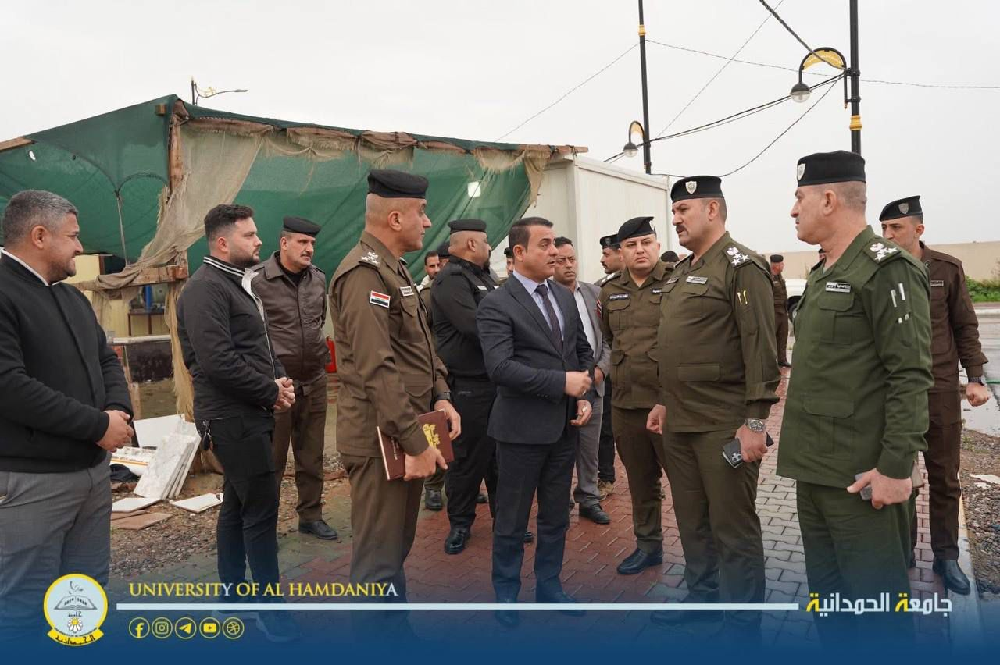

العودة للرئيسية
برامج التكافل الاجتماعي
كلية التربية البدنية وعلوم الرياضة في جامعة الحمدانية تقيم نهائي بطولة الكرة الطائرة للطلبة
أقامت كلية التربية البدنية وعلوم الرياضة في جامعة الحمدانية، يوم الأحد الموافق 15 آذار 2026، المباراة النهائية لبطولة الكرة الطائرة للطلبة، والتي جمعت بين فريقي المرحلة الثانية (A) والمرحلة الثانية (B)، وذلك على ملعب جامعة سهل نينوى.
وجاءت هذه البطولة ضمن الأنشطة التي تنظمها شعبة النشاطات الطلابية، في إطار سعيها إلى تنشيط الحركة الرياضية بين الطلبة وتعزيز روح المنافسة والتعاون فيما بينهم.
وأدار المباراة طاقم تحكيمي مكوّن من م.م أمير طلال وديع، وم.م ريفان سعيد إيشوع، والسيدة كلارا عبد الخالق إيشوع، حيث شهدت المباراة أجواءً تنافسية مميزة عكست مستوى المهارة والحماس لدى الطلبة المشاركين.
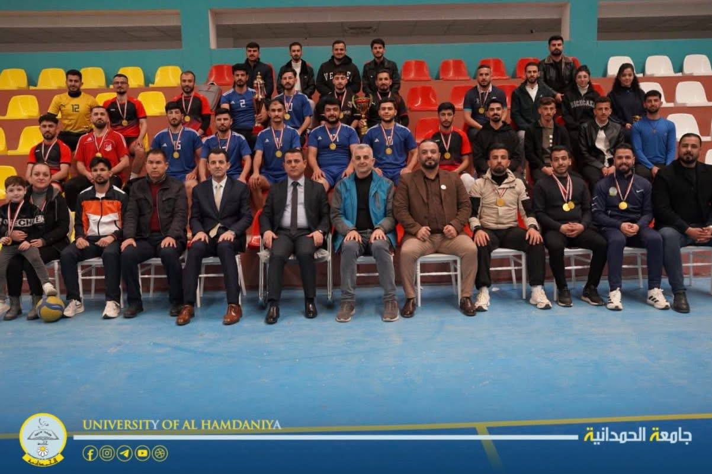
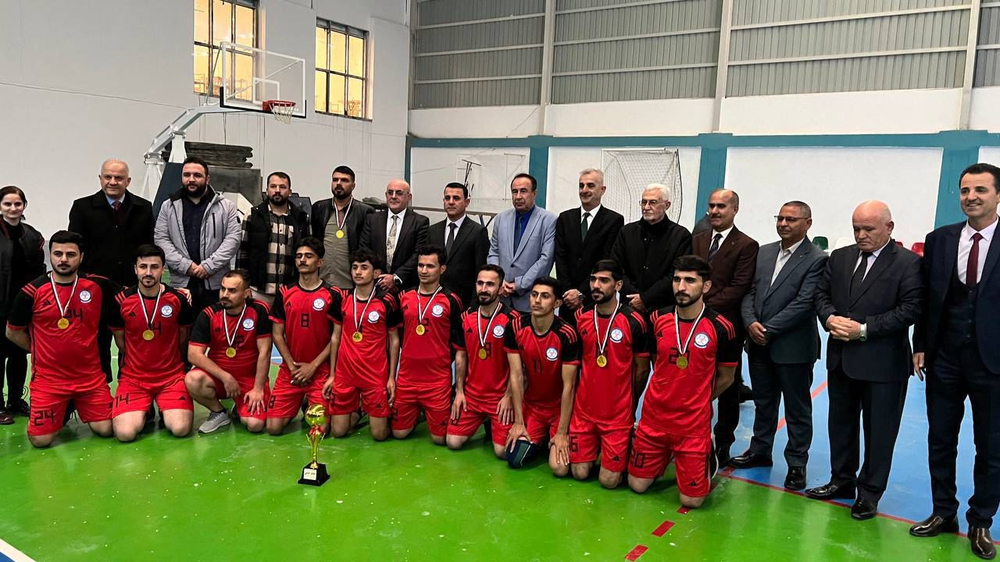
العودة للرئيسية
برامج التكافل الاجتماعي
بمناسبة عيد الفطر المبارك.. يتقدم رئيس جامعة الحمدانية الأستاذ الدكتور نشأت مبارك صليوا، بالتهنئة إلى السيد رئيس مجلس محافظة نينوى الدكتور أحمد الحاصود، متمنيا له عيدا سعيدا وأياما حافلة بالتقدم والعطاء.
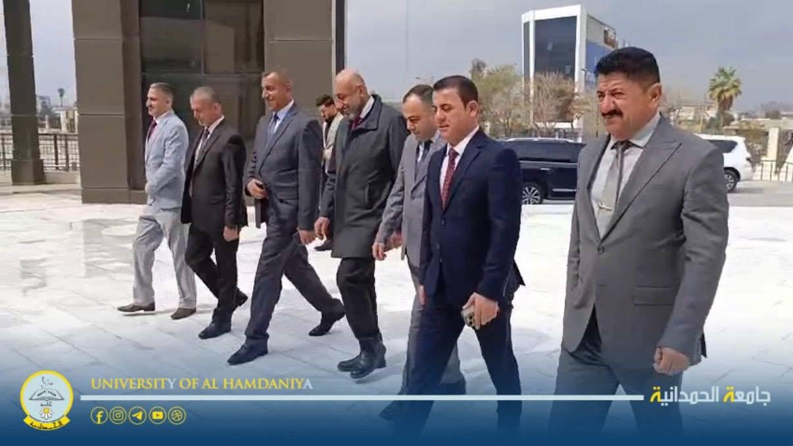
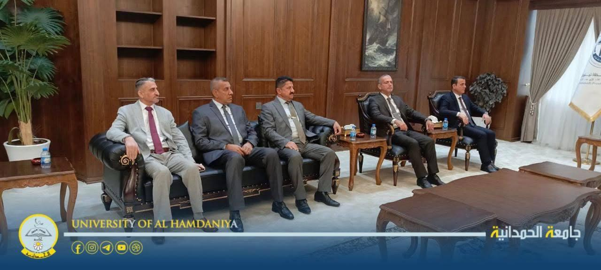
العودة للرئيسية
برامج التكافل الاجتماعي
رئيس الجامعة يعايد طلبة الحمدانية: كل عام وأنتم أساس النجاح
قدّم رئيس الجامعة أ. د. نشأت مبارك صليوا، التهاني إلى الطلبة بعد استئناف الدوام وانتهاء عطلة عيد الفطر المبارك والعودة إلى القاعات الدراسية.
وبجولة بدأها صباح الثلاثاء 24/ 3/ 2026، زار صليوا القاعات الدراسية وتبادل مع الطلبة تهاني العيد، متمنيا لهم التوفيق والنجاح والإبداع، ومشيرا إلى أنهم الجزء الأهم في كتابة نجاح الجامعة وتطويرها.
من جهتهم، عبّر الطلبة عن تثمينهم حرصَ رئيس الجامعة على إدامة الأجواء الاجتماعية والاحتفاء بالأعياد والمناسبات وتعظيمها جميعا، ما يخلق بيئة متجانسة تدعم العلم
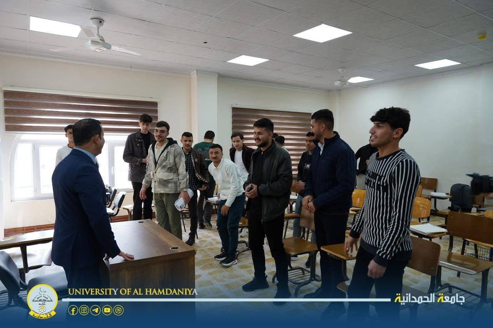
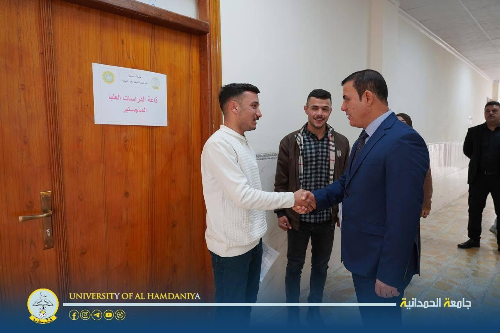
العودة للرئيسية
برامج التكافل الاجتماعي
بجولة صباحية: رئيس الجامعة يهنئ كوادرها وطلابها بمناسبة عيد الفطر المبارك.
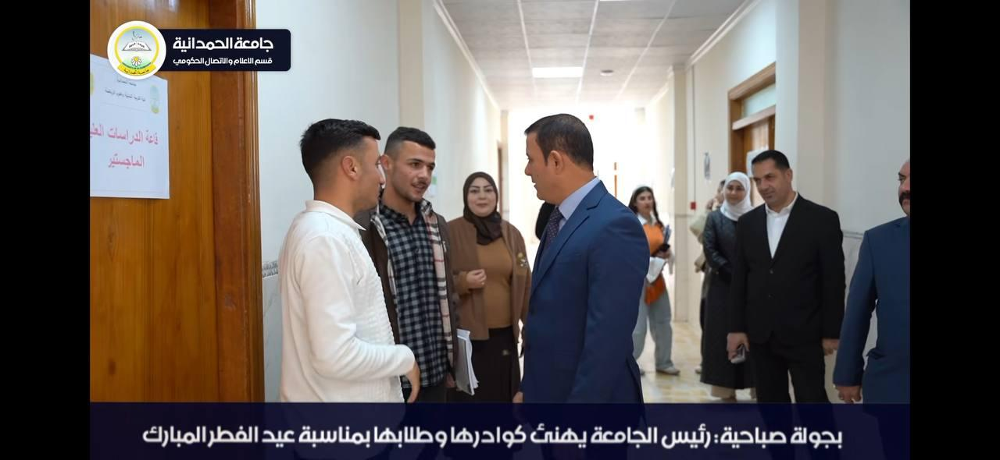
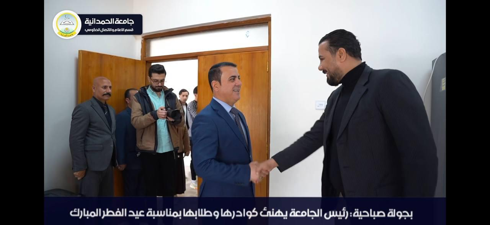
العودة للرئيسية
برامج التكافل الاجتماعي
الحمدانية والموصل توقعان اتفاقية تعاون تنفذها التربية الإنسانية وقسم النشاطات الطلابية وكلية الفنون الجميلة
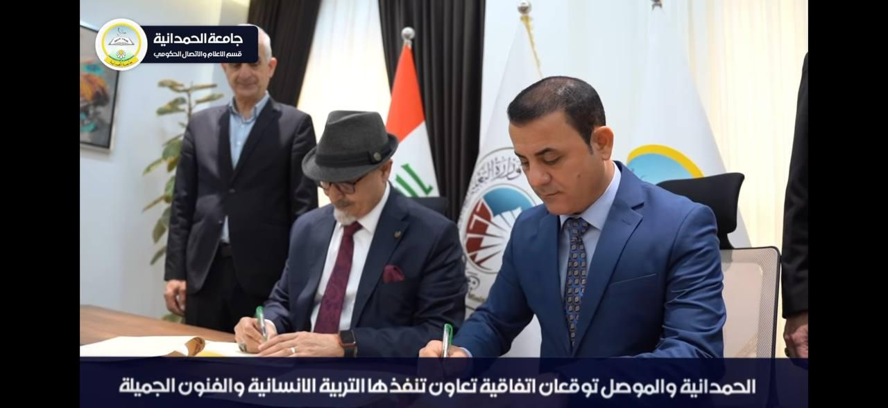
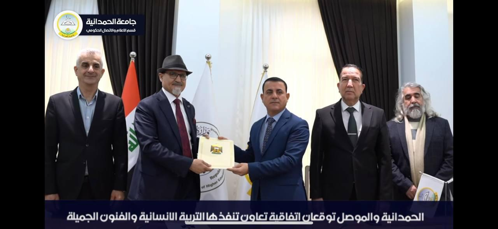
العودة للرئيسية